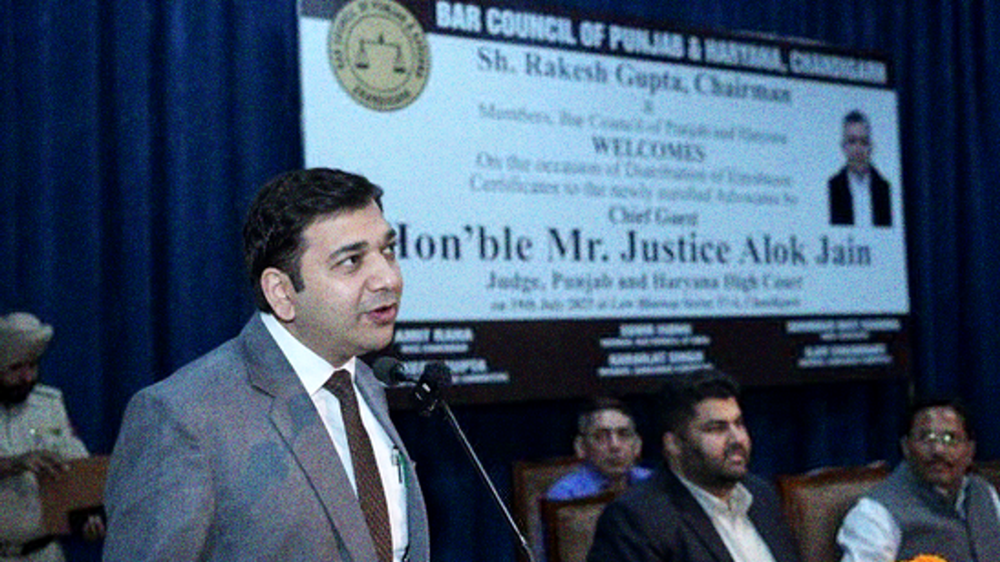

Civil Litigation
- Civil appeals, transfer petitions, Special Leave Petitions and contempt proceedings
- Contract disputes, civil procedure and limitation
- Review of case records, challenged orders and available relief

Senior Panel Counsel
Chambers of Dr. Abhishek Atrey
Abhishek Atrey serves as Senior Panel Counsel, practicing in the Supreme Court of India, the Central Administrative Tribunal in Delhi, and the Delhi High Court. The advocate handles matters in writ and constitutional law, civil litigation, and criminal law, representing clients across these forums with a focus on procedural and substantive legal issues.

Core Team

Enrolled under Bar Council registration D/230-C/97R, Abhishek Atrey holds the position of Senior Panel Counsel for the Commission For Air Quality Management in the National Capital Region and adjoining areas.
The advocate appears in the Supreme Court of India, the Central Administrative Tribunal in Delhi, and the Delhi High Court, reflecting a practice engaged with significant judicial forums.
Services & Practice Areas
The practice handles civil litigation, including proceedings involving contracts, civil appeals, and related applications.
The practice includes constitutional and administrative matters before the Supreme Court of India and the Delhi High Court.
Dr. Abhishek Atrey appears before the Delhi High Court in civil writ petitions and other matters within the court’s jurisdiction.
The Supreme Court of India, the Delhi High Court, and the Central Administrative Tribunal in Delhi.
Civil litigation, criminal law, writ and constitutional matters, service law, and Supreme Court appeals.
Call 98100 47556 or email abhishekatrey@gmail.com.